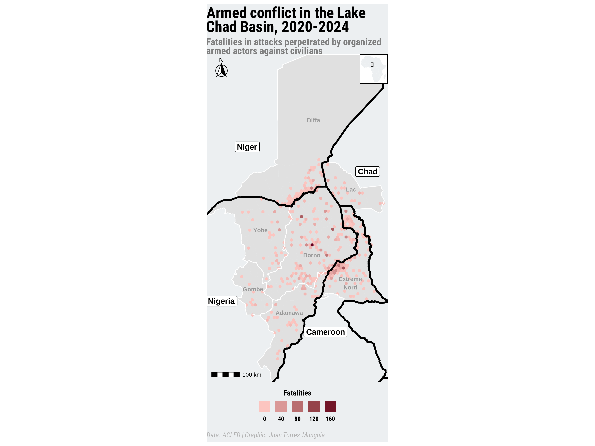

library(tidyverse) # For data manipulation and visualization
library(sf) # For handling spatial data
library(ggplot2) # For data visualization
library(patchwork) # For combining plots
library(ggtext) # Use rich text elements in ggplot
library(showtext) # Add custom fonts to plots
library(ggspatial) # For interacting with spatial data using ggplot2
library(rnaturalearth) # To provide map data that can be visualized using other R packages
library(rnaturalearthdata) # To store data for the rnaturalearth package
# Set environment to English (useful for date/time formatting)
invisible(Sys.setenv(LANG = "en"))
invisible(Sys.setlocale("LC_TIME", "English"))Visualizing armed conflict using ACLED’s data and HDX shapefiles
Using {ggplot2} and {tidyverse} to map violence against civilians in the Lake Chad Basin
data visualization
armed conflict
ACLED
Lake Chad basin
Nigeria
Niger
Chad
Cameroon
ggplot2
Overview
ACLED (Armed Conflict Location & Event Data Project) provides detailed data on political violence and protest events across the globe. This blog post explores the visualization of armed conflict in the Lake Chad Basin, focusing on the dynamics of violence against civilians in the region. Using ACLED’s data in combination with shapefiles from the Humanitarian Data Exchange (HDX) initiative of the United Nations Office for the Coordination of Humanitarian Affairs (OCHA), we leverage {ggplot2}, {sf} and the {tidyverse} to create insightful maps that highlight the impact of armed conflict.
Set-up
Load necessary libraries for data processing and visualization.
Loading data
Accessing ACLED data requires registering on their ACLED Access Portal to generate a unique access key. Once registered, you can download the data using their Data Export Tool. I downloaded all the events occurred in Africa since 1997 and save them in file acled_africa_1997-2025.csv. To have a better understanding of their data, they provide a codebook.
conflict_data <- read.csv("acled_africa_1997-2025.csv")Information of the national and sub national administrative boundaries in the Lake Chad Basin is obtained from the HDX. The information comes as a shapefile .shp and is available here in a zip file named lcb_admbnda_adm2_ocha.zip. The shapefile contains the administrative boundaries of Lake Chad Basin region at the subnational level. In particular, we will use file lcb_admbnda_adm2_ocha.shp. I also downloaded the administrative boundaries of the West and Central Africa region available here.
# Lake Chad Basin Area - Administrative boundaries for Nigeria, Chad, Cameroon and Niger
shp_lake_chad_basin <- read_sf("lcb_admbnda_adm2_ocha/lcb_admbnda_adm2_ocha.shp")
# West and Central Africa - Administrative boundaries levels 0 - 2 and Settlements
west_central_africa <- read_sf("wca_admbnda_adm2_ocha/wca_admbnda_adm2_ocha.shp")Data processing
As indicated in the ACLED’s codebook, geographic location of the events is specified in columns latitude and longitude in the conflict_data object and they are using the EPSG:4326 coordinate reference system. We have to ensure, that both shp_lake_chad_basin and west_central_africa have the same coordinate reference system. To achieve this, we use st_transform() from {sf} package.
# st_transform to convert coordinates to ACLED's data coordinate reference system
shp_lake_chad_basin <- st_transform(shp_lake_chad_basin,
crs = 4326
)
west_central_africa <- st_transform(west_central_africa,
crs = 4326
)Now, we subset the events to exclusively account for those occurred between 2020 and 2024 in the Lake Chad Basin. To achieve this, we use the {tidyverse} package for data wrangling and {sf} for spatial filtering. By applying the st_filter function, we retain only events located within the Lake Chad Basin area.
conflict_data <- conflict_data |>
# Keep only events from 2020 to 2024
filter(year >= 2020 & year < 2025) |>
# Select only "Violence against civilians" events of type "Attack"
filter(event_type == "Violence against civilians" & sub_event_type == "Attack") |>
# Keep events from Nigeria, Niger, Cameroon, and Chad
filter(country %in% c("Nigeria", "Niger", "Cameroon", "Chad")) |>
# Extract the month name from event_date
mutate(
month = month(dmy(event_date),
label = TRUE
)
) |>
# Select only relevant columns
select(
event_id_cnty, event_date, month, year, event_type, sub_event_type,
actor1, actor2, location, latitude, longitude, fatalities, notes
)
# Convert the data to a spatial object using latitude and longitude (WGS 84 CRS)
conflict_data <- st_as_sf(conflict_data,
coords = c("longitude", "latitude"),
crs = 4326
)
# Filter events that fall within the Lake Chad Basin shapefile
conflict_data_lake_chad <- conflict_data |>
st_filter(shp_lake_chad_basin)We then processes administrative boundary data to extract relevant regions in West and Central Africa, focusing on the Lake Chad Basin area.
# Filter to include only countries in the Lake Chad Basin region
# I included Central African Republic for visualization purposes
shp_countries <- west_central_africa |>
filter(admin0Name %in% c("Nigeria", "Niger", "Chad", "Cameroon", "Central African Republic"))
# Create country codes and format administrative division codes
shp_countries <- shp_countries |>
mutate(
country_code = case_when(
admin0Name == "Nigeria" ~ "NGA",
admin0Name == "Niger" ~ "NER",
admin0Name == "Chad" ~ "TCD",
admin0Name == "Cameroon" ~ "CMR"
),
# Extract and format adm1 and adm2 codes
adm1_code = str_pad(str_extract(admin1Pcod, "\\d+"), 3, pad = "0"),
adm2_code = str_pad(str_sub(admin2Pcod, 5, 6), 3, pad = "0"),
# Create a unique administrative code by combining country and division codes
adm_code = paste0(country_code, adm1_code, adm2_code)
) |>
# Rename columns for clarity
rename(
country = admin0Name,
adm1 = admin1Name,
adm2 = admin2Name
) |>
# Select only relevant columns
select(adm_code, country, adm1, adm2, geometry)
# Identify administrative units within the Lake Chad Basin
shp_countries <- shp_countries |>
mutate(lake_chad_basin = ifelse(adm_code %in% shp_lake_chad_basin$Rowcacode2,
"Yes", "No"
))
# Subset to retain only the administrative units inside the Lake Chad Basin
shp_lake_chad <- shp_countries |>
filter(lake_chad_basin == "Yes")
# Compute the bounding box for visualization
bbox <- st_bbox(shp_lake_chad)
x_min <- bbox["xmin"]
x_max <- bbox["xmax"]
y_min <- bbox["ymin"]
y_max <- bbox["ymax"]
# Aggregate administrative level 1 (regions/states) within the Lake Chad Basin
shp_adm1_aggregated <- shp_countries |>
group_by(adm1, lake_chad_basin) |>
summarise(geometry = st_union(geometry))
# Keep only regions in the Lake Chad Basin and clean names
shp_adm1_aggregated <- shp_adm1_aggregated |>
filter(lake_chad_basin == "Yes") |>
mutate(adm1 = str_replace_all(adm1, "_", " ")) |>
# Compute centroid coordinates for labeling
mutate(
x = st_coordinates(st_centroid(geometry))[, 1],
y = st_coordinates(st_centroid(geometry))[, 2]
)Now, we create a hexagonal grid over the Lake Chad region with a cell size of approximately 10.69 km and fatalities and attack counts are aggregated per grid cell.
# Reproject Lake Chad Basin shapefile to UTM Zone 33N (EPSG:32633)
# This is important to set a cell size in km
shp_lake_chad <- st_transform(shp_lake_chad, crs = 32633)
# Create a hexagonal grid over the Lake Chad Basin with a cell size of ~10.69 km
nc_grid <- st_make_grid(shp_lake_chad,
cellsize = 10690,
square = FALSE
)
# Filter the grid to keep only hexagons intersecting the Lake Chad Basin
nc_grid_filter <- nc_grid |>
st_sf() |>
st_filter(shp_lake_chad)
# Reproject the grid and Lake Chad Basin back to WGS84 (EPSG:4326)
nc_grid_filter <- st_transform(nc_grid_filter, crs = 4326)
shp_lake_chad <- st_transform(shp_lake_chad, crs = 4326)
# Spatially join conflict data with the hexagonal grid
conflict_data_grid <- st_join(nc_grid_filter, conflict_data_lake_chad, left = FALSE)
# Aggregate conflict data by grid cell, summing fatalities and counting attacks
fatalities_per_grid <- conflict_data_grid |>
group_by(nc_grid) |>
summarise(
fatalities = sum(fatalities, na.rm = TRUE),
num_attacks = n()
) |>
st_as_sf() |>
# Compute centroid coordinates for visualization
mutate(
x = st_coordinates(st_centroid(nc_grid))[, 1],
y = st_coordinates(st_centroid(nc_grid))[, 2]
)We need to relocate the coordinates of the labels for specific regions for better readability.
# Adjust label positions for specific administrative regions to improve readability
shp_adm1_aggregated <- shp_adm1_aggregated |>
mutate(
x = case_when(
adm1 == "Extreme Nord" ~ x - 0.1, # Shift label slightly left
TRUE ~ x
),
y = case_when(
adm1 == "Extreme Nord" ~ y - 0.5, # Move label downward
adm1 == "Adamawa" ~ y + 0.3, # Move label upward
adm1 == "Borno" ~ y - 0.4, # Adjust label downward
TRUE ~ y
)
)
# Aggregate country geometries by merging administrative boundaries
# Dissolve some shapes
shp_countries_countries <- shp_countries |>
group_by(country) |>
summarise(geometry = st_union(geometry)) |>
st_cast("POLYGON") |>
group_by(country) |>
# Retain the largest polygon for each country
filter(st_area(geometry) == max(st_area(geometry)))
# Define manual label positions for country names
country_labels <- tibble(
country = c("Nigeria", "Niger", "Chad", "Cameroon"),
x = c(10.15, 11, 15, 13.6), # X-coordinates for label placement
y = c(10, 15, 14.2, 9) # Y-coordinates for label placement
)We first create an empty map of the countries and highlight the Lake Chad Basin area using {ggplot2}.
lake_chad_map <- ggplot() +
# Plot country borders with a light fill color
geom_sf(
data = shp_countries,
fill = "#ECEFF1",
color = NA,
linewidth = 0,
inherit.aes = FALSE
) +
# Plot Lake Chad Basin area with a darker fill color
geom_sf(
data = shp_lake_chad,
fill = "#E0E0E0",
color = NA,
linewidth = 0,
inherit.aes = FALSE
)Now, we add the fatalities information.
lake_chad_map <- lake_chad_map +
# Plot fatalities per grid with a color gradient
geom_sf(
data = fatalities_per_grid,
aes(fill = fatalities),
color = NA,
alpha = 1
) +
scale_fill_gradient(name = "Fatalities",
low = "#FCC5C0", high = "#67001F")We add different color to subnational and national boundaries and add their corresponding labels.
lake_chad_map <- lake_chad_map +
# Plot aggregated administrative region boundaries with white lines
geom_sf(
data = shp_adm1_aggregated,
fill = NA,
color = "white",
linewidth = 0.5
) +
# Plot country boundaries with black lines
geom_sf(
data = shp_countries_countries,
fill = NA,
color = "black",
linewidth = 1.25
) +
# Add labels for administrative regions (e.g., "Extreme Nord")
geom_text(
data = shp_adm1_aggregated,
aes(
x = x, y = y,
# Wrap text if needed for long region names
label = str_wrap(adm1, 1)
),
colour = "#999",
fontface = "bold",
size = 3
) +
# Add labels for countries with a larger font
geom_label(
data = country_labels,
aes(x = x, y = y, label = country),
colour = "black",
fontface = "bold",
size = 4
)Finally, we center the map at the Lake Chad Basin area and add format for a better visualization.
# Automatically use showtext for handling fonts
showtext_auto()
# Add Google font "Roboto Condensed"
font_add_google("Roboto Condensed", "roboto")
# Title, subtitle, and caption for the waffle chart
title_chart <- "Armed conflict in the Lake Chad Basin, 2020-2024"
subtitle_chart <- "Fatalities in attacks perpetrated by organized armed actors against civilians"
caption_chart <- "Data: ACLED | Graphic: Juan Torres Munguía"
lake_chad_map <- lake_chad_map +
labs(
title = title_chart,
subtitle = subtitle_chart,
caption = caption_chart,
x = "",
y = "",
fill = ""
) +
# Set the map's coordinate limits and prevent expansion
coord_sf(
xlim = c(x_min, x_max),
ylim = c(y_min, y_max),
expand = FALSE
) +
# Add a scale bar in the bottom left
annotation_scale(location = "bl", width_hint = 0.2) +
# Add a north arrow in the top left corner
annotation_north_arrow(
location = "tl",
which_north = "true",
style = north_arrow_fancy_orienteering,
height = unit(1, "cm"),
width = unit(1, "cm")
) +
# Customize the legend
guides(
fill = guide_legend(position = "bottom")
) +
# Set the base theme without any background elements
theme_void(base_family = "roboto") +
# Customize the map's text and legend styling
theme(
# Title settings
plot.title.position = "plot", # Position of the title
plot.title = element_textbox(
color = "black",
face = "bold",
size = 22,
margin = margin(5, 0, 5, 0), # Top, right, bottom, left
# Width of the title, npc == 1 corresponds to the full width of the plot
width = unit(1, "npc")
),
plot.subtitle = element_textbox(
color = "grey50",
face = "bold",
size = 14,
margin = margin(20, 0, 10, 0),
width = unit(1, "npc")
),
# Caption settings
plot.caption = element_textbox(
color = "grey70",
face = "italic",
size = 10,
margin = margin(10, 0, 5, 0),
width = unit(1, "npc")
),
legend.title = element_text(hjust = 0.5, color = "black", face = "bold"),
legend.text = element_text(color = "black", face = "bold"),
legend.direction = "horizontal",
legend.title.position = "top",
legend.text.position = "bottom",
legend.key.size = unit(0.65, units = "cm"),
legend.background = element_rect(fill = NA, color = NA),
legend.margin = margin(t = 5, r = 10, b = 5, l = 10),
plot.background = element_rect(fill = "#ECEFF1", color = NA)
)We create a zoomed-in map of the Lake Chad Basin inset within the African continent, using ggplot2. It includes the ne_countries function from the {rnaturalearth} package to retrieve the map of Africa. The map of the Lake Chad Basin is overlaid on top of Africa, and a rectangle is drawn to highlight the region of interest (Lake Chad Basin). The map is customized with a white background and black borders.
# Fetch African countries map from the rnaturalearth package
africa <- ne_countries(continent = "Africa", returnclass = "sf")
# Create a zoomed-in map of Lake Chad Basin within the African map
lake_chad_map_zoom <- ggplot() +
# Plot the Africa map with a light fill color
geom_sf(
data = africa,
fill = "#ECEFF1",
color = NA,
linewidth = 0,
inherit.aes = FALSE
) +
# Plot Lake Chad Basin area with a darker fill color
geom_sf(
data = shp_lake_chad,
fill = "#E0E0E0",
color = NA,
linewidth = 0,
inherit.aes = FALSE
) +
# Add a rectangle highlighting the Lake Chad Basin on the Africa map
geom_rect(
aes(xmin = x_min, xmax = x_max, ymin = y_min, ymax = y_max),
color = "black",
fill = NA,
linewidth = 0.2
) +
# Remove grid and axes for a clean map appearance
theme_void() +
# Customize borders and background of the map
theme(
panel.border = element_rect(
color = "black",
fill = NA,
size = 0.8
),
plot.background = element_rect(fill = "white")
)Finally, we combine the main map of the Lake Chad Basin with an inset map of Africa showing the location of the Lake Chad Basin. The inset map is positioned within the main map using the inset_element() function of the {patchwork} package. Additionally, we set the resolution of the saved image to 320 dpi (high resolution) for better quality. Finally, the map is saved as a PNG file using ggsave()
# locate main and inset map
lake_chad_map +
inset_element(
align_to = "plot",
lake_chad_map_zoom,
right = 1,
left = 0.84,
top = 1,
bottom = 0.91,
on_top = TRUE
)# Set the resolution of the image 320 dpi is for high-quality images ("retina")
showtext_opts(dpi = 320)
ggsave(
"lake-chad-map.png",
dpi = 320,
width = 12,
height = 9,
units = "in"
)
showtext_auto(FALSE)
Citation
BibTeX citation:
@online{torres munguía2025,
author = {Torres Munguía, Juan Armando},
title = {Visualizing Armed Conflict Using {ACLED’s} Data and {HDX}
Shapefiles},
date = {2025-03-09},
langid = {en}
}
For attribution, please cite this work as:
Torres Munguía, Juan Armando. 2025. “Visualizing Armed Conflict
Using ACLED’s Data and HDX Shapefiles.” March 9, 2025.